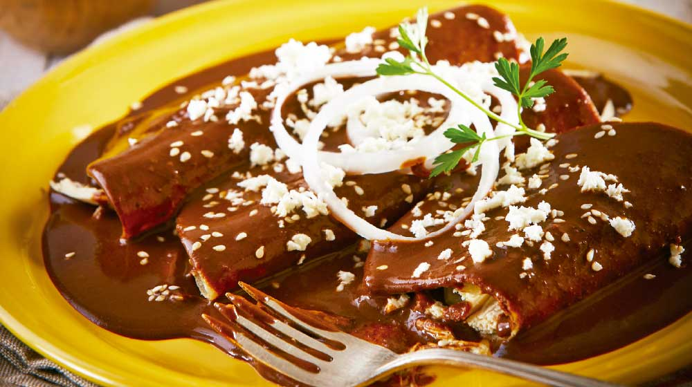

Chicken mole enchiladas
Home

Description
Shredded chicken enchiladas layered with corn or flour tortillas, shredded chicken, Mexican cheese, smothered in homemade mole sauce. Serve with a sprinkle of cotija cheese and cilantro.
Ingredients
- Dried chiles
- Chicken
- Tortillas
- Peanut Butter
- White Onions
- Unsweetened Chocolate
- Mexican Oregano
Steps
- Preheat the oven to 375 degrees F.
- Place the chicken thighs on a sheet pan, drizzle with 1 tablespoon olive oil, then season with salt and pepper. Roast until cooked through, about 15 minutes. Let cool, then shred into small pieces and place in a medium bowl.
- While the chicken cooks, place two corn tortillas in the oven, directly on the rack and bake until crisp, about 10 minutes. Set aside.
- Preheat a large, dry skillet over medium-high heat. Remove the seeds and stems from the chiles, then place them in the pan and toast for about 5-10 seconds on each side, being careful not to burn. Transfer to a bowl, then pour boiling water over top and let soak for 15-20 minutes.
- In the same pan, heat one tablespoon of olive oil over medium heat. Dice one onion and add it to the pan, then saute with a pinch of salt until translucent, about 4 minutes. Add the garlic and continue cooking for an additional 3-4 minutes. Transfer to a blender.
- Drain the chiles, then add them to the blender along with the crispy tortillas (crush them up a bit first), cinnamon, oregano, cloves, chicken stock or turkey stock, peanut butter, sugar, 2 teaspoons salt and freshly ground pepper to taste.
- Blend the mixture on high speed, letting the blender run for several minutes until the mixture is very, very smooth.
- Pour the sauce into a large pot and bring up to a boil (be careful, it will spit). Cover, then let simmer on low for about 15 minutes. Turn off heat, then stir in chocolate until melted and fully combined.
- Remove the peel from the the remaining onion and cut half of it into thin rounds. Set them aside, then finely dice the rest.
- Add the diced onion and 1 cup of mole sauce to the chicken, then mix to combine. Taste for seasoning and add more salt if needed.
- Lightly brush 12 corn tortillas with vegetable oil on both sides. Place them on a sheet pan (it's okay if they overlap a bit) and place in the oven (it should still be preheated to 375 degrees F) and bake until softened, about 5 minutes.
- Take one tortilla and dip it into the mole to coat on both sides, then let the excess drip off. Transfer to a plate, spoon a generous amount of chicken inside, then roll it up like a cigar.
- Place the enchilada seam-side-down in a 9x13 inch casserole dish, then repeat until you've used up all the chicken and tortillas. If you have any chicken remaining, stuff it into the edges of the rolled tortillas in the pan so nothing goes to waste.
- Pour any remaining mole sauce over the enchiladas, then cover with foil and bake until hot, about 15-20 minutes.
- Crumble queso fresco over top, drizzle with Mexican crema, then scatter the reserved onion rounds and cilantro and serve with extra crema and avocado on the side.